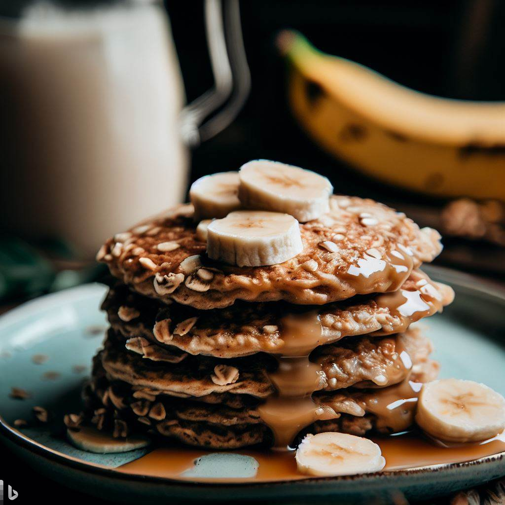

Back
Banana Oatmeal Pancakes

| Ingredients |
Amount |
| Ripe banana |
1 |
| Rolled oats |
1/2 cup |
| Eggs |
2 |
| Baking powder |
1/4 teaspoon |
| Cinnamon |
1/4 teaspoon |
| Vanilla extract |
1/4 teaspoon |
| Oil or butter |
1 teaspoon |
Directions:
- Mash the banana in a mixing bowl.
- Add in the oats, eggs, baking powder, cinnamon, and vanilla extract. Mix well until the batter is smooth.
- Heat oil or butter in a non-stick pan over medium heat.
- Spoon the batter onto the pan, using about 1/4 cup for each pancake.
- Cook until bubbles form on the surface, then flip and cook for another minute or until golden brown.
- Serve warm with maple syrup or fresh fruit.